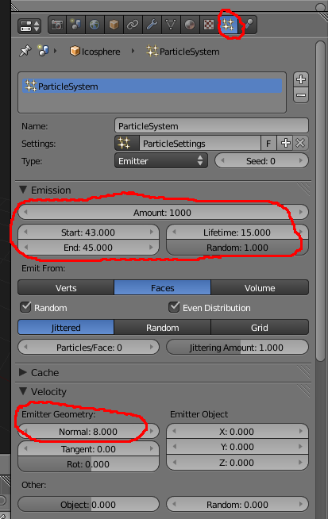
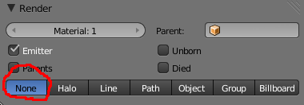
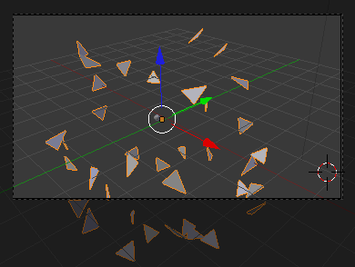
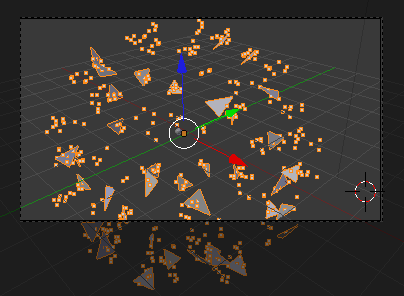
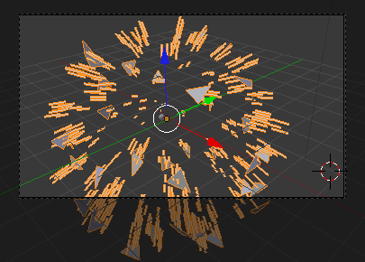
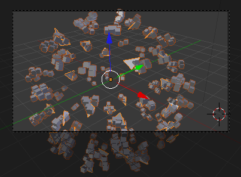
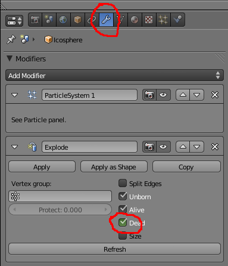

Criar explosões com Explode
Introdução
O Modifier Explode permite fazer “explodirir” (separa) a malha. No exemplo abaixo, utilizamos o Explode com um sistema de partículas para criar o efeito de explosão. na realidade, quando adiciona o Quick Explode (ver final deste texto), o Blender cria automaticamente um sistema de partículas associado ao Modifier Explode. Nos passos seguintes, mostramos como obter o mesmo efeito manualmente, construindo um sistema similar.
1- Adicione duas Icospheres. Desloque uma esfera no eixo X e redimensione a mesma (0.1). Anime a esfera pequena para esta atravessar a esfera grande em 100 frames. Verifique em que frame a esfera menor toca na esfera maior. No nosso exemplo, a esfera menor toca na maior na frame 43.

2- Seleccione a esfera maior e, no painel de partículas, adicione um sistema de partículas. Utilize os valores da imagem como referência mas pode experimentar outros valores.
Alguns dos principais parâmetros...
Amount: nº total de partículas
Start/End: Frame em que começa/acabar emissão de partículas.
Lifetime: tempo de vida das partículas, tempo que levam a desaparecer.
Random: grau de variância do tempo de vida.
Verts/Faces/Volume: de onde são emitidas as partículas.
Random/Even Distribution: emissão com ordem aleatória e com distribuição equitativa.
(Emitter geometry) Normal: velocidade inicial das partículas.
(Emitter Object) X/Y/Z: velocidade/direcção inicial das partículas tendo em conta a orientação do objecto emissor.
Random: grau de variação aleatória da velocidade inicial.
3- Na realidade, não vamos utilizar o sistema de partículas para criar emissão de partículas. Vamos utilizar o sistema de partículas para criar uma explosão combinando com o modifier Explode (como é ilustrado na imagem abaixo). Se quiser, pode experimentar renderizar para ver o efeito das partículas, depois das experiências deverá activar a opção None para não renderizar partículas.
 Alguns dos principais parâmetros...
Material: número do material (mais concretamente, o número da slot dos materiais do objecto) utilizado para as partículas.
Emitter: renderiza objecto emissor.
Parents: renderiza partículas aparentadas.
Unborn: renderiza partículas antes de serem emitidas (antes de nascerem)
Died: renderiza partículas depois de morrerem (terminado o seu lifetime)
None/Halo/Line/Path/Object/Group/Billboard: diferente formas de renderização das partículas. Através do Object, pode mesmo definir um objecto. Imagine uma explosão de suzannes ou de cubos (imagem da direita)!
  4- Com a esfera grande seleccionada, adicione o modifier Explode. Respeite a ordem apresentada e as configurações.
As opções Unborn, Alive e Dead permitem manipular a visibilidade da mesh. Por exemplo, se quiser que os pedaços da mesh (após a explosão) desapareçam após o lifetime (definido no sistema de partículas), desactive a opção Dead, etc.
5- Aplique materiais e componha a cena.
6- Faça ALT+A. Recoloque a câmara. Renderize. Depois mode modificar as configurações do Modifier Explode ou do sistema de partículas para melhorar o resultado.
Quick Effect Operators
Para facilitar a configuração básica de diversos efeitos (i.e. Smoke/Fumo, Fluid/Fluído, Explode/Explosão e Fur/Pêlo), foram criados Quick Effects Operators.
a) Selecione o objeto que irá "explodir" e clique na Barra de Espaços.
b) Escreva Quick Explode e clique no Enter.